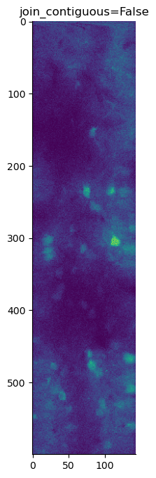
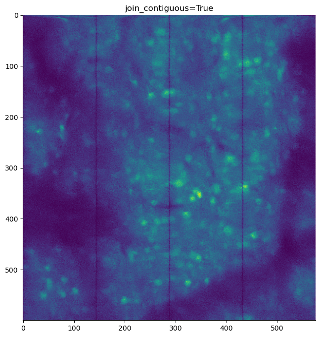

Image Assembly#
Raw ScanImage .tiff files are saved to disk in an interleaved manner. The general workflow is as follows:
Set up filepaths.
Initialize a scanreader object to read in raw .tiff files.
Save the assembled image or individual ROIs to disk.
%load_ext autoreload
%autoreload 2
from pathlib import Path
import numpy as np
import tifffile
import fastplotlib as fpl
import matplotlib.pyplot as plt
import scanreader as sr
import lbm_caiman_python as lcp
import matplotlib as mpl
mpl.rcParams.update({
'axes.spines.left': True,
'axes.spines.bottom': True,
'axes.spines.top': False,
'axes.spines.right': False,
'legend.frameon': False,
'figure.subplot.wspace': .01,
'figure.subplot.hspace': .01,
'figure.figsize': (12, 8),
'ytick.major.left': True,
})
jet = mpl.colormaps['jet']
jet.set_bad(color='k')
Available devices:
🯄 (default) | Intel(R) Graphics (RPL-P) | IntegratedGPU | Vulkan | Mesa 24.0.3-1pop1~1711635559~22.04~7a9f319
❗ | llvmpipe (LLVM 15.0.7, 256 bits) | CPU | Vulkan | Mesa 24.0.3-1pop1~1711635559~22.04~7a9f319 (LLVM 15.0.7)
❗ | Mesa Intel(R) Graphics (RPL-P) | IntegratedGPU | OpenGL |
Input data: Path to your raw .tiff file(s)#
Before processing, ensure:
Put all raw
.tifffiles, from a single imaging session, into a directory.Here, we name that directory
raw
No other
.tifffiles reside in this directory
There are a few ways to pass your raw files into the scanreader.
A string containing a wildcard pattern for files to gather:
A list of strings containing all files in that directory.
Initialize a scanreader object#
(Option 1). Simply pass a string containing a wildcard pattern for files to gather
files = "C:/Users/RBO/caiman_data/raw/*.
scan = sr.read_scan(files, join_contiguous=True)
(Option 2). Manually gather a list of strings containing all .tiff files in that directory
parent_dir = Path().home() / 'caiman_data' / 'raw'
raw_tiff_files = [str(x) for x in parent_dir.glob("*.tif*")]
scan = sr.read_scan(raw_tiff_files, join_contiguous=True)
# Using Option 1: wildcard pattern
# files = "C:/Users/RBO/caiman_data/raw/*.tiff"
files = Path().home() / 'caiman_data' / 'test'
files = [str(x) for x in files.glob('*.tiff')]
scan = sr.read_scan(files, join_contiguous=False)
print(f'Planes: {scan.num_channels}')
print(f'Frames: {scan.num_frames}')
print(f'ROIs: {scan.num_rois}')
print(f'Fields: {scan.num_fields}')
Planes: 30
Frames: 1730
ROIs: 4
Fields: 4
Preview the scanreader object#
The scanreader object contains the following attributes:
num_channels: number of channelsnum_frames: number of framesnum_rois: number of ROIsnum_fields: number of fields
When indexing the scanreader, a numpy array is returned with dimensions [field, y, x, z, T]
If
join_contiguous=True, the scanreader object will have only 1 field, as all ROIs are joined into a single field.If
join_contiguous=False, the scanreader object will have multiple fields, each corresponding to a single ROI.
array = scan[:, :, :, 1:30:2, -100:]
# 4 fields (join_contiguous=False), one for each ROI
print(f'[Field, y, x, z, T]: {array.shape}')
[Field, y, x, z, T]: (4, 600, 144, 15, 100)
%matplotlib inline
plt.imshow(array[0, :, :, 0, 0])
plt.title('join_contiguous=False')
plt.show()

Because join_contiguous=False, we have a field for each individual ROI.
# files = "C:/Users/RBO/caiman_data/raw/*.tiff"
scan = sr.read_scan(files, join_contiguous=True)
array = scan[:, :, :, 0, -500:]
plt.imshow(array[0, :, :, 0])
plt.title('join_contiguous=True')
plt.show()

Now with join_contiguous=True, ROI’s are joined to form a contiguous field.
This example demonstrates a configuration where each ROI is contiguous. However, you may have groups of ROI’s that are contiguous (i.e. 2 ROIs for the left hemisphere, 2 ROIs for the right hemisphere).
In that case, you will have 2 fields with the joined ROIs.
Displaying multiple planes with Fastplotlib#
When passing data into ImageWidget(), we need to transpose the slider dimensions to the first indices (i.e. [T, z, ...] or [T, ...]) to display the movie correctly.
array.T will transpose the slider dimensions to the first indices, though it will also flip the image on its side.
To keep your image from flipping on its side:
array = np.transpose(array.squeeze(), (3, 2, 0, 1))
# or
array = np.moveaxis(array.T.squeeze(), -1, -2)
print(f'[T, z, x, y, Field]: {array.T.shape}')
[T, z, x, y, Field]: (500, 576, 600, 1)
We also need to get rid of the singleton dimensions, as ImageWidget expects a 3D or 4D array.
array.T.squeeze().shape
(500, 576, 600)
View a single z-plane timeseries#
image_widget = fpl.ImageWidget(array.T.squeeze(), histogram_widget=True)
image_widget.figure[0, 0].auto_scale()
image_widget.show()
image_widget.close()
Include more z-planes for a 4D graphic#
array = scan[:, :, :, 1:30:2, -100:]
image_widget = fpl.ImageWidget(array.T.squeeze(), histogram_widget=True)
image_widget.figure[0, 0].auto_scale()
image_widget.show()
image_widget.close()
Path to save your files#
We can save the assembled image or individual ROIs to disk. The currently supported file extensions are .tiff and .zarr.
Note
For .zarr files to be compatible with caiman, we need to control the filenames.
Each z-plane sent through caiman needs a .zarr extension, and to be further compatible with caiman locating the dataset we need to further add a mov subdirectory to mimic compatibility hdf5 groups.
This is a CaImAn specific quirk, and we suggest sticking with .tiff to avoid any future incompatibilities with CaImAn updates.
# For .tiff files
parent_dir = Path().home() / 'caiman_data'
save_path = parent_dir / 'out'
save_path.mkdir(exist_ok=True)
save_path
PosixPath('/home/flynn/caiman_data/out')
We pass our scan object, along with the save path into lbm_caiman_python.save_as()
if join_contiguous=True, the assembled image will be saved.
if join_contiguous=False, each ROI will be saved.
Important
If you initialize the scanreader with join_contiguous=False, filename structure will be plane_{plane}_roi_{roi}.tiff
If you initialize the scanreader with join_contiguous=True, filename structure will be plane_{plane}.tiff
# We recommend discarding the first frame if it contains extra flyback lines.
lcp.save_as(scan, save_path, planes=[0, 15, 20], frames=np.arange(1, 500), overwrite=True, ext = '.tiff')
Planes: [0, 15, 20]
Read back in your file to make sure it saved properly#
img = tifffile.imread(save_path / 'plane_1.tiff')
img.shape
(499, 600, 576)
image_widget = fpl.ImageWidget(img)
image_widget.show()
image_widget.close()
Preview raw traces#
We can also preview the raw traces of the assembled image.
Click on a pixel to view the raw trace for that pixel over time.
from ipywidgets import VBox
iw_movie = fpl.ImageWidget(img, cmap="viridis")
tfig = fpl.Figure()
raw_trace = tfig[0, 0].add_line(np.zeros(img.shape[0]))
@iw_movie.managed_graphics[0].add_event_handler("click")
def pixel_clicked(ev):
col, row = ev.pick_info["index"]
raw_trace.data[:, 1] = iw_movie.data[0][:, row, col]
tfig[0, 0].auto_scale(maintain_aspect=False)
VBox([iw_movie.show(), tfig.show()])